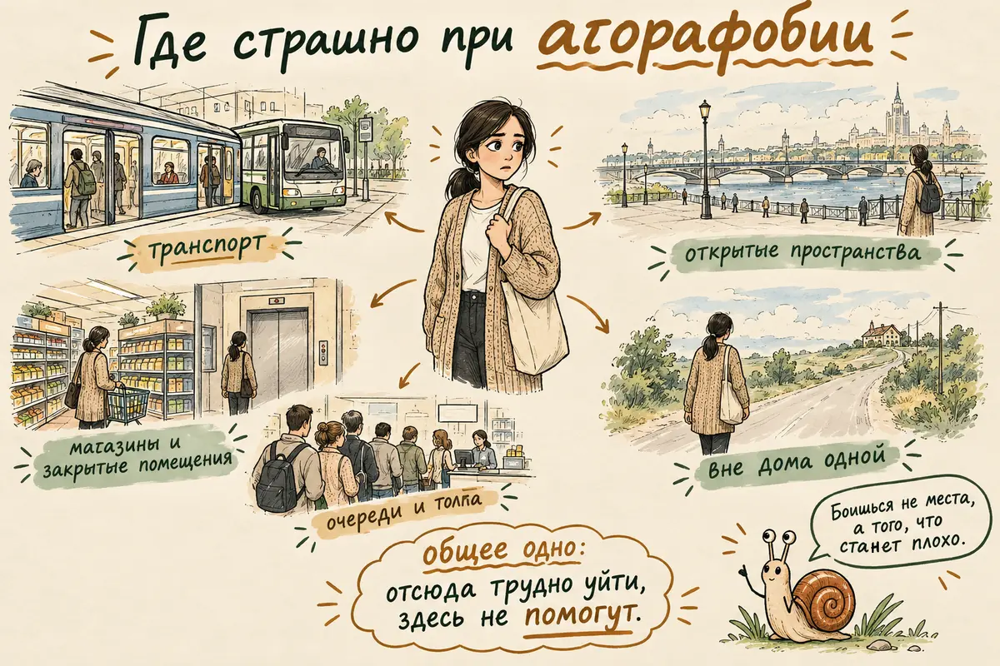
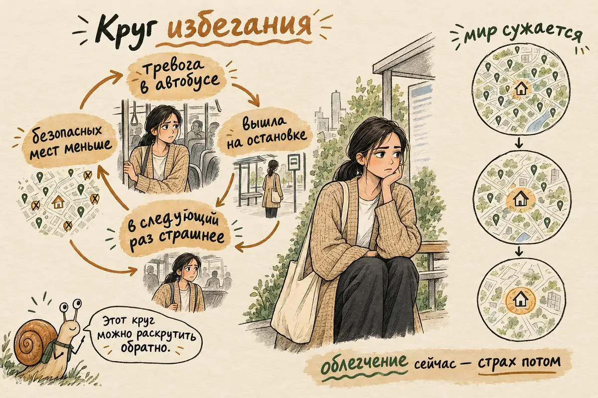
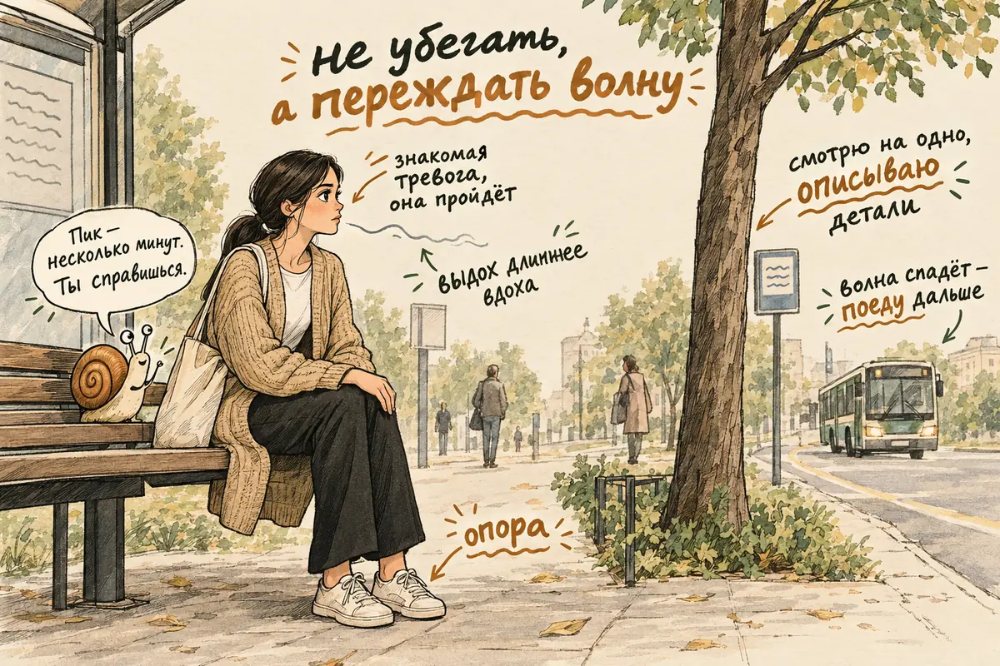
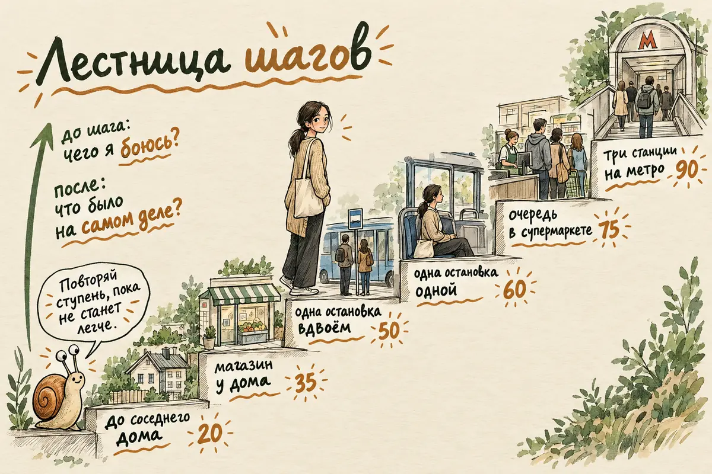
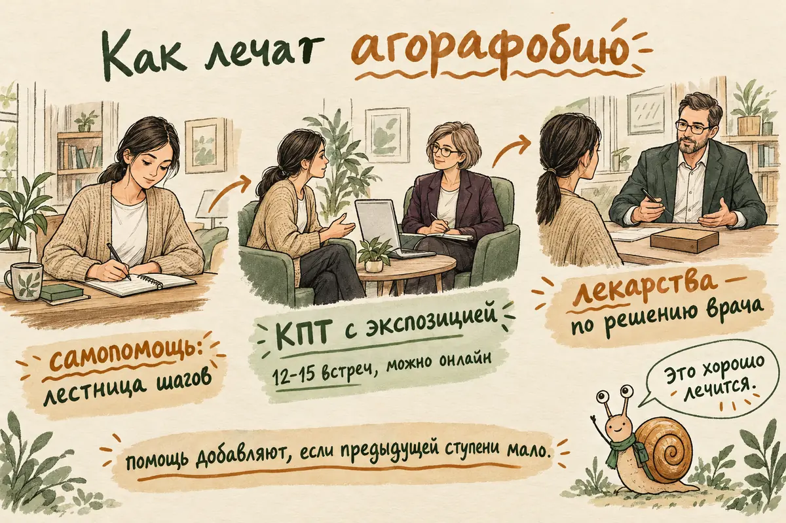
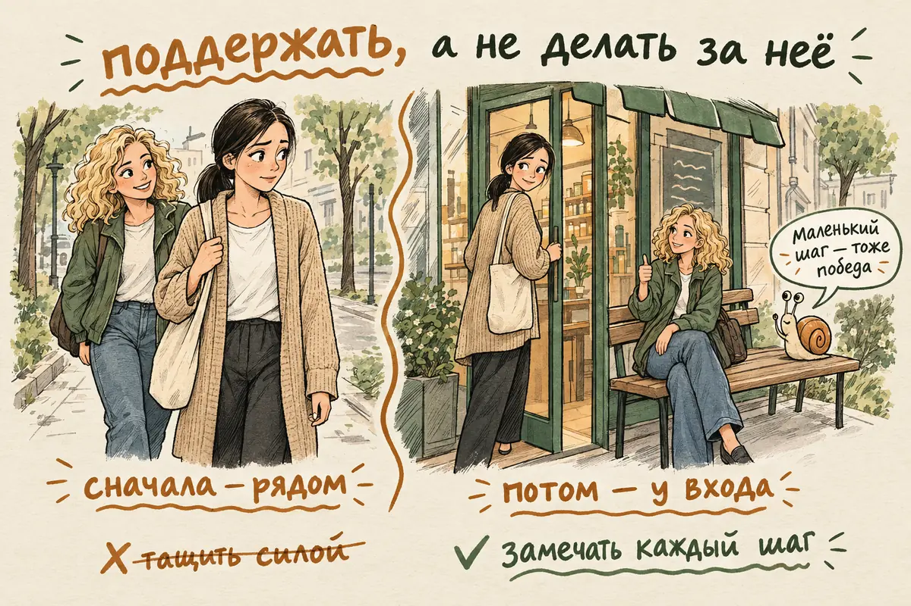

Агорафобия: что это простыми словами, симптомы, причины и как вернуть себе свободу выходить из дома
Обновлено: 24.10.2026 · Источники проверены: 24.10.2026 · 17 минут чтения
Подготовлено по материалам NHS, клиническим рекомендациям NICE, описаниям в МКБ-11 и рецензируемым исследованиям
Агорафобия — это тревожное расстройство, при котором человек боится и избегает мест и ситуаций, откуда, как ему кажется, будет трудно уйти или где никто не поможет, если станет плохо: транспорт, очереди, толпа, большие магазины, дорога далеко от дома. Это не просто «боязнь открытого пространства»: в центре страха — мысль «а вдруг мне станет плохо, и я не смогу выбраться». Агорафобия часто начинается после панических атак, но бывает и без них. Она постепенно сужает жизнь до нескольких «безопасных» маршрутов, а в тяжёлых случаях — до стен квартиры. Хорошая новость: она хорошо поддаётся лечению. Ниже — как её распознать, почему она держится и как шаг за шагом вернуть себе свободу.
2. Если это знакомый приступ тревоги и врач уже оценивал такие эпизоды, по возможности не убегайте сразу: присядьте или прислонитесь к стене там, где стоите. Приступ паники обычно достигает пика за несколько минут и затем ослабевает.
3. Дышите спокойно, делая выдох чуть длиннее вдоха, и задержите взгляд на чём-то нейтральном: вывеске, дереве, узоре на полу.
4. Напомните себе: «Это сильная тревога. Эти ощущения мне знакомы, и обычно они проходят». Заставлять себя немедленно успокоиться не нужно.
Если симптомы появились впервые или не похожи на привычные — новая или сильная боль в груди, выраженная одышка, обморок, слабость или онемение половины тела, нарушение речи, — не списывайте их на тревогу и звоните 112. Подробнее — в разделе о приступе.
- Что такое агорафобия простыми словами
- Симптомы агорафобии: ситуации, тело, мысли, поведение
- Агорафобия и панические атаки
- Чем агорафобия отличается от социофобии, клаустрофобии и депрессии
- Почему возникает агорафобия
- Как часто встречается и проходит ли сама
- Что делать, если страх накрыл вне дома
- Как избавиться от агорафобии: лестница шагов
- Как понять, что становится лучше
- Как лечат агорафобию
- Как помочь близкому с агорафобией
- Когда и к какому врачу обращаться
- Частые вопросы
Что такое агорафобия простыми словами
Агорафобия — это сильный страх оказаться в месте или ситуации, откуда трудно быстро уйти или где не получится получить помощь, если станет плохо, и избегание таких мест. Название происходит от греческого «агора» — рыночная площадь. Отсюда расхожий перевод «боязнь открытого пространства», но он сбивает с толку: открытые площади — лишь одна из ситуаций. Человек с агорафобией может спокойно стоять в пустом поле, но не может зайти в переполненный вагон или постоять в очереди в поликлинике.
Главное в агорафобии — не само место, а то, что в нём может случиться: «мне станет плохо, я упаду в обморок, у меня будет приступ паники, я опозорюсь — и не смогу отсюда выбраться». Поэтому пугают ситуации, где выход далеко или «неудобен»: середина ряда в кинотеатре, мост, пробка, кресло стоматолога, поезд между станциями.
Врачи описывают агорафобию как самостоятельное тревожное расстройство: в МКБ-11 это код 6B02, в МКБ-10, по которой ставят диагнозы в России, — F40.0 (с уточнением, есть ли паническое расстройство). О расстройстве говорят, когда страх явно сильнее реальной опасности, человек избегает таких ситуаций или терпит их с трудом либо только со спутником, и это держится устойчиво, месяцами, и заметно мешает жить. Точные критерии в разных классификациях немного различаются, а диагноз ставит специалист. Остальные тревожные расстройства и их отличия разобраны в полном гиде по тревожным расстройствам.
Симптомы агорафобии: ситуации, тело, мысли, поведение
Симптомы агорафобии складываются из четырёх частей: пугающих ситуаций, телесной тревоги в них, катастрофических мыслей и избегания. Сильнее всего жизнь меняет последнее.
Какие ситуации пугают
Чаще всего агорафобия касается нескольких групп ситуаций. Для диагноза обычно нужен страх хотя бы в двух из них:
- Транспорт — метро, автобус, электричка, самолёт, поездка за рулём по трассе или в пробке.
- Открытые пространства — площади, большие парковки, мосты, рынки.
- Закрытые помещения — магазины, торговые центры, кинотеатры, лифты.
- Очереди и толпа — кассы, концерты, приёмная врача, людная улица.
- Быть вне дома одному — особенно далеко от дома или в незнакомом месте. У части людей страшно и оставаться дома одному.

Что происходит в теле
В пугающей ситуации тело включает реакцию тревоги: сердце колотится, дыхание учащается, бросает в жар или в пот, кружится голова, подташнивает, дрожат руки, тяжело глотать, звенит в ушах, кажется, что вот-вот упадёшь в обморок. Бывает ощущение нереальности происходящего — о нём подробно в статье о дереализации. Эти ощущения очень неприятны, но сами по себе не опасны. Почему тело так реагирует, если болезни нет, — в статье о психосоматике.
Какие мысли приходят
- «Мне станет плохо, и никто не поможет».
- «Я не смогу отсюда выбраться».
- «У меня остановится сердце, я задохнусь или упаду в обморок».
- «Я сойду с ума или потеряю контроль прямо здесь».
- «Все увидят, как мне плохо, и это будет позор».
Как меняется поведение
- Избегание. Человек перестаёт ездить в транспорте, ходить в большие магазины, отказывается от поездок и встреч.
- «Безопасный спутник». Выйти можно, но только с мужем, мамой, подругой.
- «Безопасные» предметы и ритуалы. Бутылка воды, таблетка в кармане «на всякий случай», телефон с заряженной батареей, место у выхода, только знакомый маршрут, такси вместо автобуса.
- Терпение через силу. Человек всё-таки едет, но всю дорогу в сильном напряжении, считает остановки и думает только о выходе.
Выраженность бывает очень разной. При лёгкой агорафобии человек ездит на работу, но избегает метро в час пик и дальних поездок. При тяжёлой — почти или совсем не выходит из дома, и за продуктами ходят близкие или курьер.
Агорафобия и панические атаки
Один из частых сценариев — агорафобия начинается после панической атаки: человек начинает бояться не места, а повторения приступа в этом месте. Первая атака приходит внезапно — в метро, в магазине, в пробке. Она настолько пугает, что место начинает восприниматься как опасное. Дальше срабатывает логика «если здесь случилось, может случиться снова — а отсюда не выбраться». О том, что такое паническая атака и как пережить её, — в статье «Паническая атака: что делать».
Но паника — не единственный путь. В десятилетнем наблюдении за 3021 молодым человеком в Германии у большинства тех, у кого развилась агорафобия, панических атак не было никогда. У разных людей сочетаются разные факторы: общая тревожность, чувствительность к ощущениям в теле, стресс, прошлый опыт. Страх может держаться и на других опасениях: боязни упасть в обморок, внезапно захотеть в туалет, что станет плохо с сердцем, подхватить болезнь в толпе. Поэтому сейчас агорафобию и паническое расстройство описывают как отдельные расстройства, которые часто, но не всегда идут вместе.
Замкнутый круг избегания
Причины, по которым агорафобия появляется, у всех разные, но поддерживает её прежде всего избегание. Механизм выглядит так:
- Тревога в ситуации — например, в переполненном автобусе.
- Человек уходит или не идёт вовсе — выходит на ближайшей остановке, отменяет поездку.
- Сразу становится легче — и мозг запоминает: «ушёл — и спасся».
- В следующий раз тревога сильнее — ведь проверить, что ничего страшного бы не случилось, так и не удалось.
- Список опасных мест растёт — от метро к автобусу, от автобуса к магазину, от магазина к улице.
Облегчение от избегания настоящее, поэтому оно и затягивает. Но со временем оно закрепляет страх и всё сильнее ограничивает привычную жизнь. Это хорошая и плохая новость сразу: тот же механизм, только в обратную сторону, лежит в основе выхода из агорафобии.

Чем агорафобия отличается от социофобии, клаустрофобии и депрессии
Агорафобию отличает то, чего именно человек боится: не людей, не тесноты и не конкретного предмета, а того, что ему станет плохо там, откуда трудно уйти. Внешне разные состояния выглядят похоже — человек сидит дома, — поэтому важно понять, что за этим стоит.
| Чего боится человек | Пример мысли | |
|---|---|---|
| Агорафобия | Что станет плохо, а уйти или получить помощь не получится | «Если накатит в вагоне, я не выберусь» |
| Социальная тревожность | Оценки и осуждения других людей | «Все заметят, что я странный» |
| Клаустрофобия | Тесноты и замкнутого пространства как такового | «В лифте мне не хватит воздуха» |
| Депрессия | Скорее не страх, а нет сил и желания выходить | «Зачем куда-то идти, мне всё равно» |
| Генерализованная тревога | Множества разных бед, не привязанных к месту | «А вдруг что-то случится с детьми» |
Эти различия помогают понять, что именно вызывает страх, но не позволяют поставить себе диагноз: опасения часто смешиваются, а оценка зависит от всей картины. Граница не всегда чёткая, и состояния часто сочетаются: агорафобия нередко идёт вместе с паническим расстройством, депрессией и другими тревожными расстройствами. Если страх в толпе связан прежде всего с тем, что вас будут разглядывать и оценивать, ближе к вам может быть статья о социальной тревожности. А если вы давно никуда не выходите и одновременно ничего не радует, стоит проверить и признаки депрессии: долгая изоляция дома сама по себе её подпитывает.
Почему возникает агорафобия
Единой причины у агорафобии нет: обычно сходятся врождённая чувствительность к тревоге, напряжённый период жизни и пугающий эпизод в каком-то месте, а дальше расстройство закрепляет избегание. По материалам NHS, к агорафобии чаще приводят:
- Панические атаки — особенно если первая случилась в транспорте или людном месте.
- Тяжёлые жизненные события — утрата близкого, развод, потеря работы.
- Травмирующий опыт в детстве — например, смерть родителя или насилие.
- Другие психические расстройства — депрессия, расстройства пищевого поведения.
- Злоупотребление алкоголем или наркотиками.
- Несчастливые отношения — в том числе с контролирующим партнёром.
- Конкретные страхи — стать жертвой преступления или теракта, заразиться в толпе, опозориться на людях.
Влияют и черты темперамента: склонность замечать малейшие изменения в теле и считать их опасными, общая тревожность с детства. Часто агорафобия начинается в юности и молодости. По данным национального опроса подростков в США 2001–2004 годов, она хотя бы раз в жизни была у 2,4% подростков 13–18 лет, у девочек — более чем в два раза чаще, чем у мальчиков.
Агорафобия — не слабость характера и не «блажь». Человек не выбирает бояться автобуса так же, как не выбирает бояться высоты. Упрёки «соберись» не помогают, а стыд заставляет скрывать проблему и откладывать помощь.
Как часто встречается и проходит ли сама
Агорафобия встречается примерно у 1% взрослых в течение года и может держаться долго, особенно если избегание растёт; рассчитывать только на то, что она пройдёт сама, не стоит. По данным Национального института психического здоровья США (опрос 2001–2003 годов), за год она была у 0,9% взрослых, хотя бы раз в жизни — у 1,3%. У 41% из них нарушения в жизни оценивались как серьёзные.
Течение у всех разное: симптомы могут то усиливаться, то ослабевать. Но в уже упомянутом десятилетнем наблюдении за молодыми людьми из обычной популяции, а не из клиник, стойкое исчезновение симптомов при повторных обследованиях было нечастым: от 0 до 23% в разных группах — с агорафобией, с паникой или с тем и другим. Одно из объяснений — тот же круг избегания: он не даёт страху угаснуть.
Зато агорафобия хорошо поддаётся лечению — об этом ниже. И чем раньше начать, тем меньше пространства приходится возвращать.
Что делать, если страх накрыл вне дома
Если знакомая тревога накрыла в транспорте, магазине или на улице, лучшее, что можно сделать, — по возможности остаться на месте и переждать волну, а не убегать. Так советует и NHS: бегство приносит облегчение сейчас, но учит мозг, что место опасно. Если вы за рулём, сначала остановитесь там, где это безопасно. А если симптомы новые или не похожи на прежние приступы, сначала — медицинская помощь, а не упражнения.
- Назовите происходящее. Если врач уже оценивал такие эпизоды и вы знаете, что это панические приступы, скажите себе: «Это сильная тревога. Эти ощущения мне знакомы, волна поднимется и спадёт». Приступ паники обычно достигает пика за несколько минут.
- Не боритесь с ощущениями. Попытки задавить страх усилием воли обычно его усиливают. Не нужно заставлять себя немедленно успокоиться: разрешите сердцу стучать, а рукам дрожать — знакомый приступ пройдёт.
- Замедлите выдох. Вдох на четыре счёта, выдох на пять-шесть, несколько минут. Не делайте частых глубоких вдохов: от них сильнее кружится голова.
- Найдите точку опоры. Присядьте, если можно, или прислонитесь к стене, почувствуйте стопы на полу. Задержите взгляд на чём-то нейтральном: вывеске, дереве, узоре плитки — и опишите его про себя в деталях.
- Вернитесь к делу. Когда волна спадёт, по возможности продолжите то, что делали: доехать до нужной станции, дойти до кассы. Каждый такой раз — доказательство для мозга, что вы справились, а не спаслись.
Если в этот раз пришлось уйти — это не провал. Важно не то, ушли вы или нет, а то, чтобы вскоре вернуться в эту ситуацию снова, пусть ненадолго. Больше техник, которые снижают тревогу в моменте, — в статье «Как справиться с тревогой».

Как избавиться от агорафобии: лестница шагов
Основной способ избавиться от агорафобии — постепенно и по плану возвращаться в ситуации, которых вы избегаете, начиная с посильных и проверяя на опыте, сбываются ли ваши опасения. В психотерапии это называют экспозицией, и это ядро когнитивно-поведенческой терапии при агорафобии. Вот как это устроено.
1. Составьте список ситуаций
Выпишите всё, чего вы избегаете или что терпите с трудом, и оцените каждый пункт по шкале от 0 до 100: насколько это страшно. Не судите себя — записывайте как есть, даже «дойти до почтового ящика».
2. Выстройте лестницу
Расставьте ситуации от самой лёгкой к самой трудной. Если между соседними ступенями большой разрыв, придумайте промежуточные: не «поехать в метро», а «постоять у входа в метро», «спуститься к турникетам», «проехать одну станцию со спутником», «проехать одну станцию одной».
| Ситуация | Страх, 0–100 | |
|---|---|---|
| Ступень 1 | Дойти до соседнего дома и вернуться | 20 |
| Ступень 2 | Зайти в маленький магазин у дома и купить хлеб | 35 |
| Ступень 3 | Проехать одну остановку на автобусе вдвоём | 50 |
| Ступень 4 | Проехать одну остановку на автобусе одной | 60 |
| Ступень 5 | Постоять в очереди в супермаркете | 75 |
| Ступень 6 | Проехать три станции на метро не в час пик | 90 |
3. Поднимайтесь по одной ступени
- Начинайте со ступени, которая вызывает заметную, но выносимую тревогу — примерно 30–40 из 100. Слишком лёгкие шаги мало что меняют, слишком трудные пугают и отбивают желание продолжать. Специально доводить себя до предельной паники не нужно.
- Перед шагом сформулируйте, чего боитесь. Например: «Если я проеду остановку одна, я упаду в обморок». После шага сравните: что случилось на самом деле?
- Побудьте в ситуации достаточно долго, чтобы это проверить. Цель не в том, чтобы любой ценой дождаться полного спокойствия, а в том, чтобы убедиться: вы можете быть там с тревогой и справляетесь. Иногда страх уменьшается прямо во время шага, иногда — только после нескольких повторений.
- Повторяйте часто. Одна и та же ступень несколько раз в неделю работает лучше, чем один героический рывок в месяц.
- Переходите выше, когда текущая ступень стала заметно легче — не обязательно совсем без страха. Если ступень оказалась слишком трудной, это не провал: разбейте её на шаги поменьше.
4. Постепенно проверьте свои «страховки»
Почти у всех с агорафобией есть свои способы подстраховаться: место у выхода, только знакомый маршрут, спутник, вода, отвлекающий подкаст в наушниках. Сами по себе эти вещи не плохие: телефон — это просто связь, вода бывает нужна, а спутник на первых ступенях — нормальный промежуточный этап. Важно, зачем вы их используете. Если без них выйти невозможно, потому что «иначе случится катастрофа», они мешают проверить, что вы справляетесь сами. Такие страховки можно ослаблять постепенно, по одной: сначала спутник идёт рядом, потом ждёт у входа, потом остаётся дома. Лекарства, назначенные врачом, в это не входят: не оставляйте их дома ради упражнения и не меняйте приём без согласования с врачом.

Что мешает выйти из агорафобии
Часто прогресс тормозят не обстоятельства, а привычные способы справиться, которые на деле подпитывают страх:
| Что делают | Что помогает вместо этого | |
|---|---|---|
| Ждать, когда пройдёт страх | Откладывают выход, «пока не станет полегче» | Выходить с тревогой: смелость приходит после шага, а не до него |
| Рывок | Сразу едут на самую страшную ступень и уходят на пике паники | Начинать с выносимой ступени и оставаться до спада |
| Уход на пике | Покидают ситуацию, как только становится страшно, и больше туда не возвращаются | Если посильно, переждать волну; если пришлось уйти — вернуться позже к ступени полегче |
| Страховки навсегда | Выходят, только если всё подстраховано: спутник, место у выхода, знакомый маршрут | Ослаблять страховки по одной; назначенные лекарства — только по согласованию с врачом |
| Алкоголь для храбрости | Выпивают перед поездкой, чтобы «отпустило» | Медленное дыхание и маленькие шаги; при сильной тревоге — врач |
| Подсчёт неудач | Считают каждый плохой день провалом | Смотреть на тенденцию за месяц: откаты — нормальная часть пути |
Самостоятельная лестница подходит, если агорафобия лёгкая или средняя и вы чувствуете в себе силы. Если страх очень сильный, вы почти не выходите из дома, упражнения вызывают чрезмерную панику или несколько попыток закончились отступлением, лучше подниматься по лестнице вместе со специалистом: он поможет правильно подобрать ступени и не бросить на полпути.
Как понять, что становится лучше
Прогресс при агорафобии — это не только меньше тревоги, но и больше жизни: вы снова делаете то, от чего отказались, даже если пока делаете это с волнением. Многие ждут дня, когда страх исчезнет совсем, и не замечают, что уже ездят на работу, сами ходят в магазин или выходят без спутника. Смотрите на такие признаки:
- Список доступных мест растёт — появляются магазины, маршруты и виды транспорта, которые вы снова можете использовать.
- Расстояние от дома увеличивается — вы уходите дальше, чем месяц назад.
- Нужно меньше страховок — реже нужен спутник, место у выхода, только знакомая дорога.
- Страх меньше управляет решениями — вы соглашаетесь на встречи и поездки, а не придумываете повод отказаться.
- Тревога быстрее проходит — после трудной ситуации вы приходите в себя за минуты, а не за весь вечер.
Дневник шагов
Заметить прогресс помогает простая запись после каждого шага. Через две-три недели в ней обычно видно то, что трудно почувствовать изнутри. Пример одной записи:
| Пример | |
|---|---|
| Ситуация | Одна остановка на автобусе одной |
| Чего я боялась | Что мне станет плохо и я не смогу выйти |
| Тревога до, на пике и после, 0–100 | 60 → 75 → 35 |
| Что было на самом деле | Было страшно первые две минуты, плохо не стало, вышла на своей остановке |
| Что я узнала | Волна поднимается и спадает, даже если я никуда не ухожу |
Если случился откат
После хорошей недели может прийти тяжёлый день, когда снова страшно там, где уже было легко. Чаще всего это связано с усталостью, болезнью, недосыпом или стрессом и не означает, что всё вернулось к началу. Не ругайте себя: вернитесь на ступень-две ниже, повторите их и поднимайтесь снова. Оценивайте динамику за месяц, а не по одному дню.
Как лечат агорафобию
Основной метод лечения агорафобии — когнитивно-поведенческая терапия с постепенной экспозицией; при необходимости врач добавляет антидепрессанты. И британское NHS, и клинические рекомендации NICE советуют ступенчатый подход: от самопомощи к более интенсивной помощи, если её не хватает.
Психотерапия
Лучше всего изучена КПТ. В сетевом метаанализе 2022 года сравнили 136 рандомизированных исследований психотерапии панического расстройства с агорафобией и без неё — более 7 тысяч участников. КПТ оказалась самым надёжным выбором первой линии и единственным методом, который сохранил преимущество после исключения исследований низкого качества. Краткосрочная психодинамическая терапия тоже показала эффект, но с меньшей уверенностью в данных.
Что входит в КПТ при агорафобии:
- Понимание тревоги — как работает реакция страха, почему ощущения неприятны, но не опасны, и как избегание поддерживает расстройство.
- Работа с катастрофическими мыслями — «я упаду в обморок», «я не выберусь» — и проверка их на опыте.
- Экспозиция в реальных ситуациях — та самая лестница шагов, только вместе с терапевтом.
- Работа с телесными ощущениями — специальные упражнения, которые вызывают учащённое сердцебиение или головокружение, чтобы они перестали пугать. В разборе компонентов КПТ при панике по 72 исследованиям этот элемент и очный формат были связаны с лучшим результатом.
По рекомендациям NHS и NICE курс КПТ обычно занимает 12–15 еженедельных встреч по часу. Это ориентир, а не норма: кому-то хватает меньшего, кому-то нужно больше. Если выйти из дома пока невозможно, первые встречи можно провести по видеосвязи, а часть экспозиции — делать между сессиями по плану. Другие подходы — например, терапия принятия и ответственности — тоже работают с избеганием, но доказательств при агорафобии у них меньше, чем у КПТ.
Лекарства
При выраженной агорафобии, особенно вместе с паническим расстройством или депрессией, врач может назначить антидепрессанты — чаще всего из группы СИОЗС. По NHS, их обычно принимают от полугода до года и дольше, а отменяют постепенно, под контролем врача. Эффект наступает не сразу, а в первые недели возможны побочные эффекты, поэтому важно не бросать приём самостоятельно.
Успокоительные из группы бензодиазепинов быстро снимают тревогу, но для длительного лечения панического расстройства их не рекомендуют: по NICE, они связаны с худшими результатами в долгую. Какой препарат подходит, решает врач с учётом диагноза, сопутствующих состояний, противопоказаний и ваших предпочтений; начинать, менять и отменять лечение самостоятельно не стоит.

Как помочь близкому с агорафобией
Лучшая помощь близкому с агорафобией — поддерживать его маленькие шаги наружу, а не делать всё за него и не заставлять силой. Родным часто приходится выбирать между двумя крайностями: взять на себя все покупки и поездки или устроить «шоковую терапию». Обе обычно вредят.
- Признайте, что страх настоящий. Фразы «да что тут страшного» и «возьми себя в руки» звучат как обвинение и заставляют скрывать состояние.
- Не тащите насильно. Неожиданная поездка «чтобы перебороть» чаще заканчивается паникой и ещё большим страхом.
- Не берите на себя всё. Если вы годами ходите за продуктами, возите и сопровождаете везде, вы невольно поддерживаете избегание. Договоритесь о переходе постепенно.
- Будьте спутником на ступенях лестницы — по договорённости, с планом, а потом постепенно отходите: ждите у выхода, потом в машине, потом дома.
- Замечайте прогресс. Дойти до магазина у дома для человека с агорафобией — реальное достижение, даже если вам это кажется мелочью.
- Поддержите обращение к специалисту — помогите найти врача, записаться, при необходимости съездите вместе.
- Берегите себя. Жить рядом с тяжёлой агорафобией утомительно. Ваша усталость — не повод для вины.

Когда и к какому врачу обращаться
К специалисту стоит обратиться, если страх заставляет отказываться от работы, учёбы, встреч или поездок, если список мест, куда вы не ходите, растёт, или если вы не можете выходить без спутника. Чем раньше начато лечение, тем меньше территории приходится отвоёвывать.
- Психиатр или психотерапевт — ставит диагноз, отличает агорафобию от других состояний, при необходимости назначает лечение. В России к психиатру можно попасть бесплатно по полису ОМС.
- Психолог — может вести КПТ и экспозицию, но не ставит диагноз и не назначает лекарства.
- Терапевт — если приступы с сердцебиением, одышкой или головокружением появились впервые: сначала стоит исключить болезни сердца, щитовидной железы и другие телесные причины.
Не откладывайте обращение, если:
- вы почти или совсем не выходите из дома;
- для того чтобы выйти, вам всё чаще нужен алкоголь или успокоительные без назначения врача;
- к страху присоединились подавленность, бессонница, потеря интереса ко всему;
- появились мысли о том, что жить не хочется.
Если вы не можете дойти до поликлиники, это не тупик. Многие врачи и психотерапевты консультируют по видеосвязи, а первый шаг лестницы может быть общим со специалистом: доехать до кабинета со спутником. Про страх «поставят на учёт»: в законе такого понятия нет, а консультация психиатра сама по себе не означает диспансерного наблюдения. Разбор со ссылками на закон и список бесплатных служб — в справочнике помощи.
С чего начать, если трудно даже подумать о выходе? Можно сначала разобраться на бумаге: записать, каких ситуаций вы избегаете, чего именно боитесь и как сейчас справляетесь, и составить вопросы для специалиста. В AI Therapist можно делать это вместе с собеседником — разобрать свои опасения, набросать ступени лестницы и вести дневник шагов, без регистрации и в любое время суток. Приложение даёт информационную и психологическую поддержку: оно не ставит диагноз, не исключает медицинские причины симптомов и не заменяет психотерапию, врача или экстренную помощь. Если вы почти не выходите из дома, лучше начать с консультации специалиста — в том числе онлайн.
Частые вопросы
Что такое агорафобия простыми словами?
Это сильный страх оказаться там, откуда трудно уйти или где никто не поможет, если станет плохо: в транспорте, очереди, толпе, большом магазине, далеко от дома. Человек начинает избегать таких мест, и его жизнь постепенно сужается. Это не просто боязнь открытого пространства: в центре страха — мысль «мне станет плохо, и я не выберусь».
Чем агорафобия отличается от боязни открытого пространства?
Открытые пространства — лишь одна из ситуаций, которых боятся при агорафобии. Гораздо чаще пугают транспорт, очереди, магазины, толпа и дорога вне дома в одиночку. Общее у них не простор, а ощущение, что если станет плохо, уйти или получить помощь будет трудно.
Связана ли агорафобия с паническими атаками?
Часто да: агорафобия нередко начинается после панической атаки, когда человек начинает бояться повторения приступа в том же месте. Но она бывает и без панических атак — например, из-за страха упасть в обморок или что станет плохо с сердцем. Поэтому сейчас агорафобию и паническое расстройство считают отдельными расстройствами, которые часто идут вместе.
Проходит ли агорафобия сама?
Рассчитывать на это не стоит. Течение у всех разное, но агорафобия может держаться годами, особенно если избегание растёт: оно приносит облегчение и поэтому закрепляет страх. Зато она хорошо поддаётся лечению, и чем раньше его начать, тем меньше приходится возвращать.
Как избавиться от агорафобии самостоятельно?
Составьте список ситуаций, которых избегаете, расставьте их от самой лёгкой к самой трудной и начните с посильной ступени. Перед шагом сформулируйте, чего боитесь, а после проверьте, что случилось на самом деле; повторяйте ступень несколько раз в неделю и только потом переходите выше. Если страх очень сильный или вы почти не выходите из дома, лучше делать это вместе со специалистом.
Как понять, что лечение помогает?
Смотрите не только на то, меньше ли тревога, но и на то, сколько жизни вернулось: больше мест, куда вы снова ходите, дальше от дома, реже нужен спутник, страх меньше решает за вас. Тревога может ещё оставаться, а прогресс уже есть. Отдельные тяжёлые дни нормальны — оценивайте динамику за месяц.
Как лечат агорафобию?
Основной метод — когнитивно-поведенческая терапия с постепенной экспозицией, то есть возвращением в пугающие ситуации по плану. Ориентир по курсу — 12–15 еженедельных встреч. При выраженных симптомах врач может назначить антидепрессанты; успокоительные из группы бензодиазепинов для длительного лечения не рекомендуют.
К какому врачу идти с агорафобией?
К психиатру или психотерапевту: они ставят диагноз и при необходимости назначают лечение. В России к психиатру можно попасть бесплатно по полису ОМС, а консультация сама по себе не означает диспансерного наблюдения. Если приступы с сердцебиением и одышкой появились впервые, стоит также обратиться к терапевту, чтобы исключить телесные причины.
Что делать, если с агорафобией невозможно выйти из дома?
Начать с консультации специалиста по видеосвязи: многие психиатры и психотерапевты работают онлайн. Первые шаги экспозиции можно делать прямо у дома — выйти на лестничную площадку, во двор, дойти до соседнего подъезда. Близкие могут помочь, сопровождая на первых шагах, но не делая всё за вас.
Как подготовлен материал. Текст подготовлен редакцией AI Therapist. Мы опираемся на материалы NHS, клинические рекомендации NICE, описание расстройства в МКБ-11 и рецензируемые исследования — эпидемиологические данные, долгосрочные наблюдения и метаанализы испытаний лечения; цифры приводим по первоисточникам и ставим ссылки рядом с ними. О лекарствах пишем только то, что прямо следует из рекомендаций, и не называем доз. Материал носит просветительский характер и не заменяет консультацию врача: поставить диагноз может только специалист на очной консультации.
Источники: МКБ-11, ВОЗ — агорафобия (6B02), NHS — Agoraphobia, NICE CG113 — Generalised anxiety disorder and panic disorder in adults: management, NIMH — Agoraphobia statistics, Wittchen H.-U. et al. «Agoraphobia and panic. Prospective-longitudinal relations suggest a rethinking of diagnostic concepts», Psychotherapy and Psychosomatics, 2008, Wittchen H.-U. et al. «Agoraphobia: a review of the diagnostic classificatory position and criteria», Depression and Anxiety, 2010, Papola D. et al. «Comparative efficacy and acceptability of psychotherapies for panic disorder with or without agoraphobia: systematic review and network meta-analysis», British Journal of Psychiatry, 2022, Pompoli A. et al. «Dismantling cognitive-behaviour therapy for panic disorder: a systematic review and component network meta-analysis», Psychological Medicine, 2018.
Кто отвечает за содержание сайта и по каким правилам мы готовим материалы — на странице о проекте.
Читать также
- Паническая атака: что делать — агорафобия часто начинается после приступа паники.
- Как справиться с тревогой — техники, которые снижают тревогу в моменте и в целом.
- Тревожное расстройство: полный гид — все формы тревоги и карта материалов.
- Социальная тревожность — если в толпе страшнее всего чужая оценка.
- Дереализация — когда в пугающих местах мир кажется ненастоящим.
- Тест на тревожность GAD-7 — оценить, насколько выражена тревога.